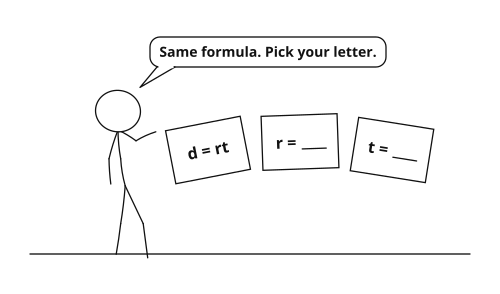

1. A = lw gives the area of a rectangle.
If A = 24 and l = 6, what is w? 4
What if the length doubled but the area stayed the same? the width would be halved, to 2
2. What do d = rt, F = ma, and P = 2l + 2w all have in common?
They are all formulas — equations built almost entirely out of variables.
3. To get x by itself in 3x + 5 = 20, what do you do first? How would that work in 3x + a = b?
Subtract 5 first. In 3x + a = b you subtract a the same way, giving x = b − a3.

| A = lw | the formula |
| Al = w | divide both sides by l |
| w = Al | write the wanted variable first |
d = rt → t = dr
V = IR → I = VR
| P = 2l + 2w | the formula |
| P − 2l = 2w | subtract 2l from both sides |
| w = P − 2l2 | divide both sides by 2 |
| y = mx + b | the equation |
| y − b = mx | subtract b from both sides |
| x = y − bm | divide both sides by m |
b = 2c − 3a
V − 12 = Bh → h = V − 12B
| A = 12bh + 3 | the formula |
| A − 3 = 12bh | subtract 3 from both sides |
| 2(A − 3) = bh | multiply both sides by 2 |
| b = 2(A − 3)h | divide both sides by h |
| C = 59(F − 32) | the formula |
| 95C = F − 32 | multiply both sides by 95 |
| F = 95C + 32 | add 32 to both sides |
Where have you seen the answer before? it is the Celsius-to-Fahrenheit formula from 2.5
PVnR = T + 2 → T = PVnR − 2
| Formula | Work | Answer |
|---|---|---|
| 1. A = lw; for l | divide by w | l = Aw |
| 2. P = 2l + 2w; for l | subtract 2w, divide by 2 | l = P − 2w2 |
| 3. I = Prt; for t | divide by Pr | t = IPr |
| 4. V = Bh; for B | divide by h | B = Vh |
| 5. F = ma; for a | divide by m | a = Fm |
| 6. y = mx + b; for m | subtract b, divide by x | m = y − bx |
| 7. C = 2πr; for r | divide by 2π | r = C2π |
| 8. S = dt; for d | multiply by t | d = St |
| 9. P = 4s; for s | divide by 4 | s = P4 |
| 10. A = 12bh; for b | multiply by 2, divide by h | b = 2Ah |
| 11. P = 2(l + w); for l | divide by 2, subtract w | l = P2 − w |
| 12. M = p + q2; for p | multiply by 2, subtract q | p = 2M − q |
| Formula | Work | Answer |
|---|---|---|
| 13. V = Bh + k; for h | subtract k, divide by B | h = V − kB |
| 14. W = mg + c; for m | subtract c, divide by g | m = W − cg |
| 15. y − b = mx; for x | divide by m | x = y − bm |
| 16. Q = st − r; for t | add r, divide by s | t = Q + rs |
| 17. A = 12(b1 + b2)h; for h | multiply by 2, divide by (b1 + b2) | h = 2Ab1 + b2 |
| 18. D = rt + s; for t | subtract s, divide by r | t = D − sr |
| 19. V = πr2h; for h | divide by πr2 | h = Vπr2 |
| 20. K = 3n − 7p; for p | subtract 3n, divide by −7 | p = 3n − K7 |
| 21. A = P + rtP; for r | subtract P, divide by tP | r = A − PtP |
| 22. M = ab − cd; for b | add cd, divide by a | b = M + cda |
| 23. T = a + b + c3; for b | multiply by 3, subtract a and c | b = 3T − a − c |
2A = (b1 + b2)h → 2Ah = b1 + b2
b1 = 2Ah − b2
C − f = np → p = C − fn
For a fixed total C, p shrinks as n grows — the same money is spread over more items.